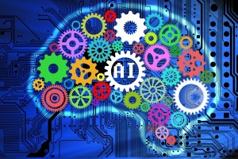

Success in creating AI would be the biggest event in human history. Unfortunately, it might also be the last, unless we learn how to avoid the risks.
~ Stephen Hawking

Machine Learning
In short, Artificial Intelligence is the concept of machine learning. In computer science, AI focuses on creating "smart machines" that can perform human-cognitive tasks. Ai is just one discipline of computer science that continues to expand as the field progresses into new discoveries.
AI is the search for a universal machine algorithm for learning and behaving at a human-level of intelligence.